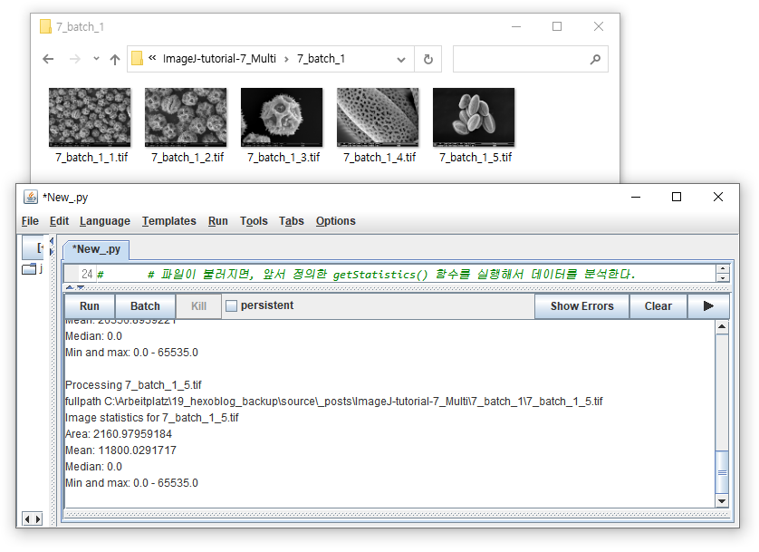
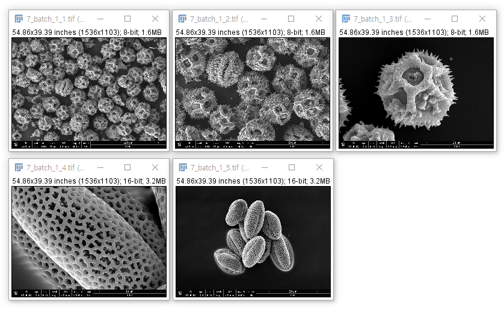
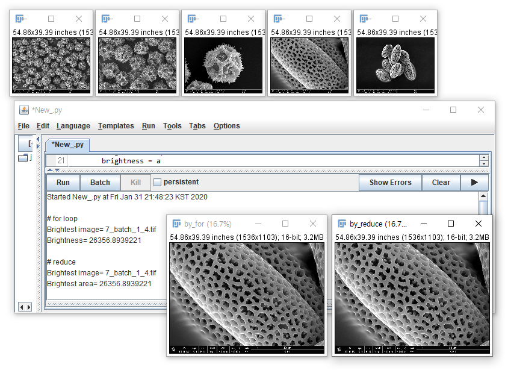

7. Batch Processing: 이미지 일괄 처리
Reference
A Fiji Scripting Tutorial #3. Inspecting properties and pixels of an image
대량의 이미지를 한번에 처리해야 하는 경우, 이미지를 하나 하나 불러오는 것보다 일괄처리가 효과적입니다.
이미지가 모여 있는 폴더를 지정할 수도 있고,
분석 대상 이미지들을 화면에 띄운 후 떠 있는 이미지들을 일괄적으로 처리할 수도 있습니다.
7.1. 이미지 파일 일괄 처리
그림파일 다섯 개가 있는 예제파일을 받아 한 폴더에 풉니다.
아래 코드를 실행하여 다섯 이미지의 데이터를 일괄적으로 구해봅시다.
ImageJ > Tutorial > 6. Image Data 분석 글에 있는 6.2.2.1. 코드를 이용해 보겠습니다.
면적, 평균, 중간값 등을 일괄적으로 추출하기 위해 python의
def문을 사용하여 함수를 만들어줍니다.그리고
os.listdir()을 이용해 지정된 디렉토리 내의 함수를 훑으면서 이미지를 분석하고 그 결과를 출력합니다.1
2
3
4
5
6
7
8
9
10
11
12
13
14
15
16
17
18
19
20
21
22
23
24
25
26
27
28
29
30
31
32from ij import IJ
import os
# 1. Load Image 위치:
folder = r"C:\Arbeitplatz\19_hexoblog_backup\source\_posts\ImageJ-tutorial-7_Multi\7_batch_1"
# 2. Image 통계 정보 일괄 분석
# 2-1. 함수 정의
def getStatistics(imp):
stats = imp.getStatistics()
# 면적, 평균, 중간값, 최소값, 최대값을 가져옴
return stats.area, stats.mean, stats.median, stats.min, stats.max
# 확장자가 ".tif"인 파일들로부터 데이터 읽어오기.
for filename in os.listdir(folder): # 폴더 안에 있는 파일에 하나씩 접근
if filename.endswith(".tif"): # 파일 이름이 ".tif"로 끝난다면,
print "\nProcessing", filename
fullpath = os.path.join(folder, filename) # 폴더명과 파일명을 결합
print "fullpath", fullpath
imp = IJ.openImage(fullpath) # 파일을 불러온다.
if imp is None: # 파일이 제대로 불러지지 않으면,
print "Could not open image from file:", filename # 에러메시지 출력
continue # 다른 파일을 읽어본다.
# 파일이 불러지면, 앞서 정의한 getStatistics() 함수를 실행해서 데이터를 분석한다.
area, mean, median, vmin, vmax = getStatistics(imp)
print "Image statistics for", imp.title
print "Area:", area
print "Mean:", mean
print "Median:", median
print "Min and max:", vmin, "-", vmax
else: # 파일 이름이 ".tif"로 끝나지 않으면
print "Ignoring", filename # 파일 이름만 출력하고 넘어간다.실행 결과가 전체를 보이기엔 너무 길어서 아래 창에 마지막 파일에 대한 실행 결과만을 도시하였습니다.
파일명(7_batch_1_5.tif), 면적(
Area: 2160.97), 평균(Mean: 11800.02), 중간값(Median: 0.0) 등이 출력되어 있습니다.최대값(
max: 65535.0)이 이제까지 다룬 이미지(255)와 달리 65536입니다. 16-bit 이기 때문입니다.
1
2
3
4
5
6
7
8....
Processing 7_batch_1_5.tif
fullpath C:\Arbeitplatz\19_hexoblog_backup\source\_posts\ImageJ-tutorial-7-Batch\7_batch_1\7_batch_1_5.tif
Image statistics for 7_batch_1_5.tif
Area: 2160.97959184
Mean: 11800.0291717
Median: 0.0
Min and max: 0.0 - 65535.0
7.2. 이미지 목록(list) 만들기
7.1.에서는 특정 위치의 파일들을 하나씩 건드려보는 방식을 취했습니다.
그러나 동일한 파일 집합을 대상으로 여러 오퍼레이션을 하는 경우에, 미리 파일을 묶어놓으면 좋습니다.
화면에 띄워놓은 이미지들은
WindowManager모듈을 이용하여 리스트 형식으로 모을 수 있습니다.1
2
3
4
5
6
7from ij import WindowManager as WM
images = [] # 빈 리스트 생성
for id in WM.getIDList():
images.append(WM.getImage(id))
print images- 처럼 다섯 그림을 모두 띄워놓고 실행하면, 다음과 같은 메시지가 나옵니다.

1
[img["7_batch_1_1.tif" (-67), 8-bit, 1536x1103x1x1x1], img["7_batch_1_2.tif" (-68), 8-bit, 1536x1103x1x1x1], img["7_batch_1_3.tif" (-72), 8-bit, 1536x1103x1x1x1], img["7_batch_1_4.tif" (-73), 16-bit, 1536x1103x1x1x1], img["7_batch_1_5.tif" (-74), 16-bit, 1536x1103x1x1x1]]
- 각 이미지에 대해 -67 ~ -74 까지의 id가 매겨져 있습니다.
- 이미지의 이름이나 크기 등에 무관하게
ImageJ가 실행된 후 열어본 이미지들에 붙는 일련번호입니다. - 그 외의 정보는 ImageJ > Tutorial > 2. Image File 구조 에 기술되어 있습니다.
이미지 리스트 작성을 더 짧게 할 수도 있습니다.
ImageJ > Tutorial > 4. Python Basic 에서 설명한list comprehension과map을 사용하면 됩니다.1
2
3
4
5
6
7
8
9
10from ij import WindowManager as WM
# 1. list comprehension
images_lc = [WM.getImage(id) for id in WM.getIDList()]
# 2. map
images_map = map(WM.getImage, WM.getIDList())
print "images (list comprehension):\n", images_lc
print "\nimages (map):\n", images_map- 다음과 같이 두 가지 방식에서 동일한 결과가 얻어집니다.
1
2
3
4
5images (list comprehension):
[img["7_batch_1_1.tif" (-67), 8-bit, 1536x1103x1x1x1], img["7_batch_1_2.tif" (-68), 8-bit, 1536x1103x1x1x1], img["7_batch_1_3.tif" (-72), 8-bit, 1536x1103x1x1x1], img["7_batch_1_4.tif" (-73), 16-bit, 1536x1103x1x1x1], img["7_batch_1_5.tif" (-74), 16-bit, 1536x1103x1x1x1]]
images (map):
[img["7_batch_1_1.tif" (-67), 8-bit, 1536x1103x1x1x1], img["7_batch_1_2.tif" (-68), 8-bit, 1536x1103x1x1x1], img["7_batch_1_3.tif" (-72), 8-bit, 1536x1103x1x1x1], img["7_batch_1_4.tif" (-73), 16-bit, 1536x1103x1x1x1], img["7_batch_1_5.tif" (-74), 16-bit, 1536x1103x1x1x1]]
- 다음과 같이 두 가지 방식에서 동일한 결과가 얻어집니다.
7.3. 이미지 list 활용하기
7.3.1. 이름으로 파일 찾기
읽어들인 이미지 중에서 내가 찾는 이름(“7_batch_1_4.tif”)의 파일이 있는지 확인해보겠습니다.
ImageJ > Tutorial > 4. Python Basic 에서 설명한
filter를 사용하면 효과적입니다.1
2
3
4
5
6
7
8
9
10
11
12
13
14
15from ij import WindowManager as WM
# 1. map을 이용해 image list 작성
imps = map(WM.getImage, WM.getIDList())
# 2. 함수 이름 비교 함수
def match(imp):
# 이미지(imp)의 title에 찾는 이름이 있으면 true
return imp.title.find("7_batch_1_4.tif") > -1
# 3. filter를 이용해서 파일 존재 확인
matching = filter(match, imps)
# 4. 결과 출력
print matching- 실행 결과, 성공적으로 파일을 찾았습니다.
1
[img["7_batch_1_4.tif" (-73), 16-bit, 1536x1103x1x1x1]]
- 그리고 당연히,
filter대신for loop,list comprehension등을 사용할 수 있습니다.
1
2
3
4
5
6
7
8# 1: 'for' loop (별도의 리스트를 생성해야 합니다)
matching = []
for imp in imps:
if match(imp):
matching.append(imp)
# Method 2: list comprehension
matching = [imp for imp in imps if match(imp)]
#### 7.3.2. 가장 밝은 이미지 찾기이미지의 평균 밝기를 비교해서 가장 큰 것을 찾아보겠습니다.
- 이미지를 하나씩 열면서 방금 연 이미지의 밝기가 기존 기록보다 더 크면 갱신하는 작업입니다.
for loop과reduce를 비교해 보겠습니다.1
2
3
4
5
6
7
8
9
10
11
12
13
14
15
16
17
18
19
20
21
22
23
24
25
26
27
28
29
30
31
32
33
34
35
36
37
38
39
40
41
42
43
44
45
46
47from ij import IJ
from ij import WindowManager as WM
from ij.plugin import Duplicator
# 1. map을 이용해 image list 작성
imps = map(WM.getImage, WM.getIDList())
# 2. 평균 명도를 구하는 함수
def bright(imp):
stats = imp.getStatistics()
return stats.mean
# 3. 가장 밝은 이미지 찾기
# 3-1. for loop
brightest = None
brightness = 0
for imp in imps:
a = bright(imp)
if brightest is None:
brightest = imp
brightness = a
else:
if a > brightness:
brightest = imp
brightness = a
print "\n# for loop"
print "Brightest image=", brightest.title
print "Brightness=", brightness
brightest_for = Duplicator().run(brightest)
brightest_for.title = "by_for"
brightest_for.show()
# 3-2. reduce
def brightestImage(imp1, imp2):
return imp1 if bright(imp1) > bright(imp2) else imp2
largest = reduce(brightestImage, imps)
print "\n# reduce"
print "Brightest image=", brightest.title
print "Brightest area=", brightness
brightest_reduce = Duplicator().run(brightest)
brightest_reduce.title = "by_reduce"
brightest_reduce.show("by_reduce")for loop은 가장 큰 이미지와 그 넓이를 사전에 정의하고, image 리스트인 imps에 저장된 이미지를 하나씩 꺼내보면서 새로 꺼낸 이미지의 넓이가 기존 기록을 갱신했는지 비교합니다.reduce는 이미지의 넓이를 비교하는 함수(brightestImage)와 이미지 리스트(imps)를 인자로 받아들여, imps에brightestImage를 적용합니다.
